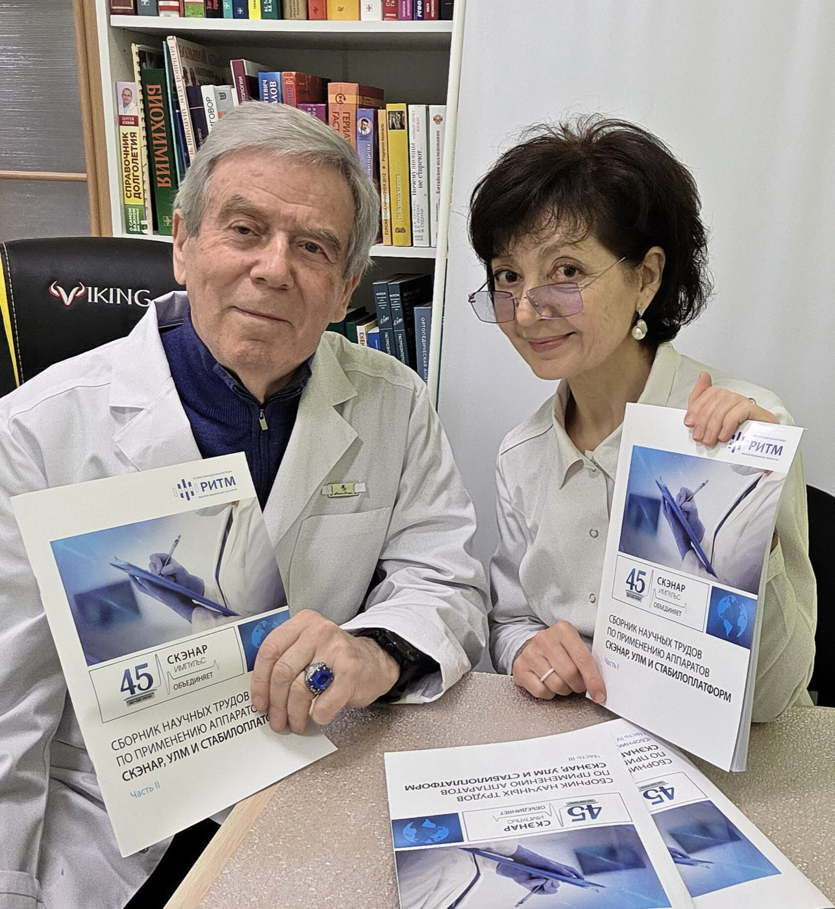
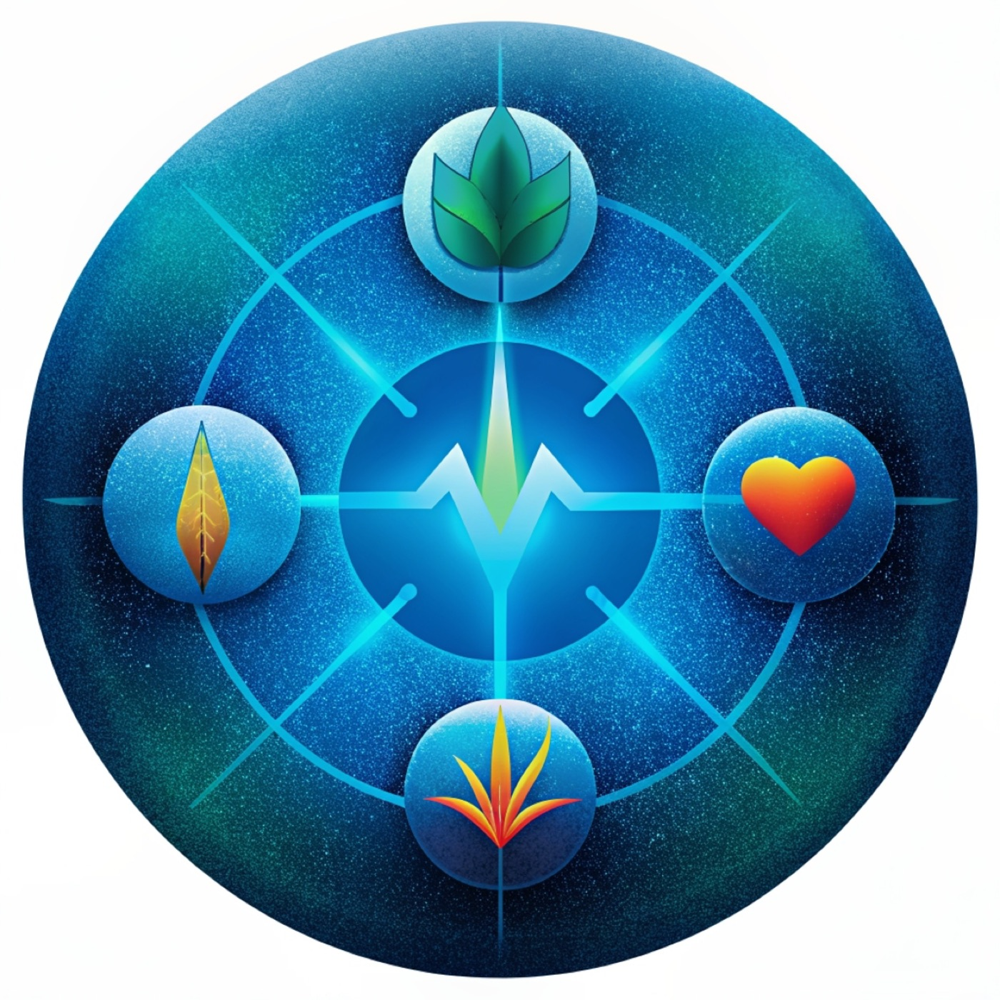
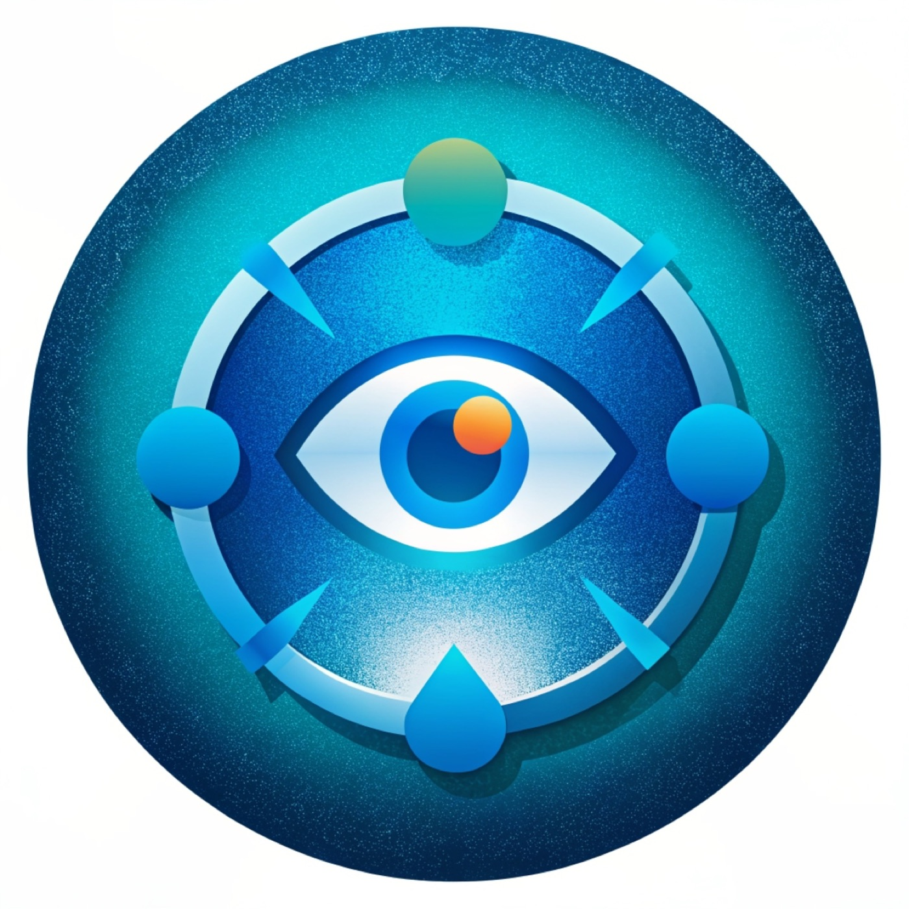
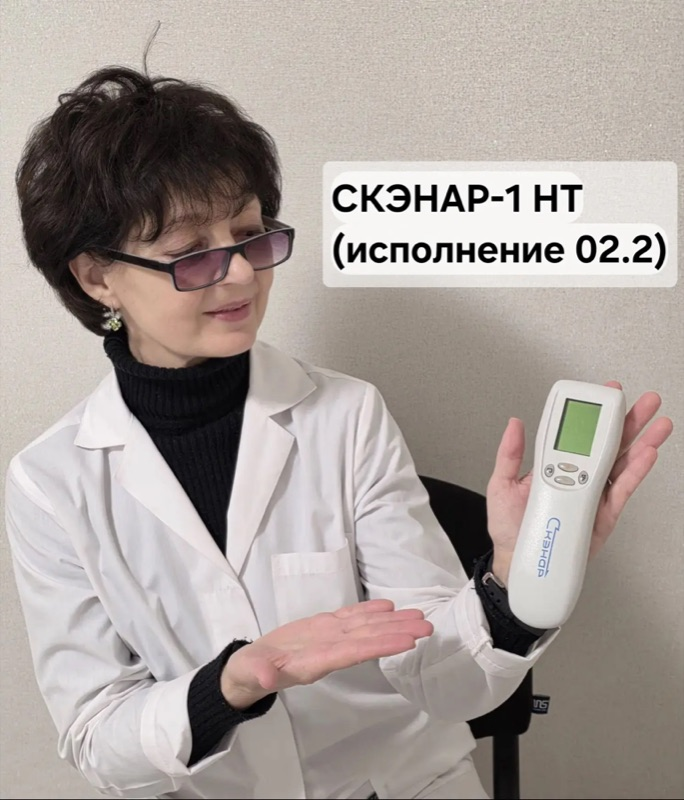

МОНИКОР
Мониторинг и коррекция: диагностика состояния всех органов и систем с одновременным устранением найденных нарушений.
Подробнее →+7 (962) 788-39-75 · Константин Владимирович
+7 (923) 404-73-35 · Татьяна Анатольевна
Лечим неврологические, офтальмологические, иммунные и другие заболевания через активацию скрытых резервов организма — там, где классическая медицина бессильна.

Не нужно разбираться в терминах. Начните с консультации — дальше врач проведёт по шагам.
Врач выслушает, изучит историю болезни и скажет, чем может помочь метод.
2Моникор проверит все органы и системы, ВРТ — наличие вирусов, инфекций и паразитов.
3СКЭНАР-терапия, лечение Моникором, резонансно-частотная и индукционная терапия.
4Школа для домашних пользователей, свой аппарат и авторские PDF-методики.

Курс процедур у врача-физиотерапевта. Безболезненно, без таблеток и уколов.

Глубокая и быстрая проверка всех органов — с исправлением найденных нарушений.
Базовые и тематические школы для домашних СКЭНАР-пользователей. 15 авторских программ.

Аппараты СКЭНАР, выносные электроды и цифровые PDF-руководства от врачей центра.
Такого сочетания мы не встречали у других клиник — оно позволяет и найти причину, и устранить её.
Мониторинг и коррекция: диагностика состояния всех органов и систем с одновременным устранением найденных нарушений.
Подробнее →Аппарат с биологической обратной связью. Справляется с большинством известных заболеваний за счёт активации врождённых систем восстановления.
Подробнее →Выявление патогенных вирусов, инфекций и паразитов с последующим уничтожением нежелательных обитателей.
Подробнее →Константин Владимирович работает с методом с 1998 года, Татьяна Анатольевна — с 2009-го. Вместе разработали авторские электроды и методики, выступали в США, Германии, Австрии, Болгарии и Мексике.


Самый функциональный аппарат «домашней» серии: ЖК-дисплей и расширенный набор режимов для лечения дома.

Самая популярная модель профессиональной линейки среди врачей и продвинутых пользователей.

При кашле любого происхождения: ХОБЛ, астма, бронхит, постковидные изменения. Схема зон, режимы, советы для детей и взрослых.

Боль в горле, кашель, температура у ребёнка — остановить болезнь в первые часы дома. Пошаговая инструкция с картинками.
Доктор Никитин К. В. просто на ноги поставил без всяких лекарств (год назад — удаление поясничной грыжи и части диска). После операции стало только хуже, а сейчас после скэнара очень хорошо. Татьяна Анатольевна устранила у меня все вирусы и паразитов, главное — без химии! Ходим всей семьёй лечимся.
Сыну поставили диагноз «бронхиальная астма». Татьяна Анатольевна подробно объяснила, что может вызывать приступы, какие этапы лечения нужно пройти. После нескольких курсов СКЭНАР-терапии приступы больше не повторялись. Сейчас, спустя 2 года, ребёнок живёт обычной жизнью без ингалятора.
Знакома с доктором Никитиным с 2003 года: из-за травмы позвоночника почти не могла ходить. Не помогли ни уколы, ни блокады. Исцеление наступило только после курса скэнар-терапии. А дочке 5 лет — благодаря доктору выздоровление наступает быстро, без осложнений и таблеток.
Удивительный метод лечения! В очередной раз обратился к Константину Владимировичу по поводу миофасцита. Результат великолепный, боль прошла без применения лекарственных препаратов!
Резкое снижение веса, зрения, обмороки — и врачи разводили руками. Константин Владимирович и Татьяна Анатольевна за месяц поставили меня на ноги. Комплексно, разумно — и результат есть! Все симптомы ушли, вес стабилизировался, зрение улучшилось.
Как приятно почувствовать забытое ощущение тела без боли. Благодаря помощи и компетентности Константина Владимировича и его коллег я вспомнил это ощущение. Спасибо, доктор!
Уже 12 лет периодически лечу сына у Константина Никитина. Лямблиоз, цитомегаловирус, бесконечные ОРЗ и ОРВИ — безболезненно и без антибиотиков доктор исцелял моего сына.
В медицине с тысячелетней историей один из главных принципов — мобилизация собственных ресурсов организма при минимуме медикаментов. Кожа — информационное поле, а биологически активные точки — его ключевые элементы.
Читать статью →ЗаболеванияБоль в позвоночнике в 90% случаев вызвана остеохондрозом. И на 80% он зависит от образа жизни, при котором страдают печень, кишечник и поджелудочная.
Читать статью →ЗаболеванияВозможно ли восстановление хряща при артрозе, протрузии и грыже? Механизмы регенерации, клинические примеры и результаты СКЭНАР-терапии.
Читать статью →ЗаболеванияВлияет на уровень энергии, быстроту мышления, память, блеск глаз и красоту волос, работу кишечника и сердца.
Читать статью →Образ жизниПочему без изменения образа жизни даже самая эффективная терапия даёт лишь временный результат.
Читать статью →Расскажите о проблеме — врач подскажет, нужна ли диагностика, какое лечение подойдёт и сколько сеансов потребуется.